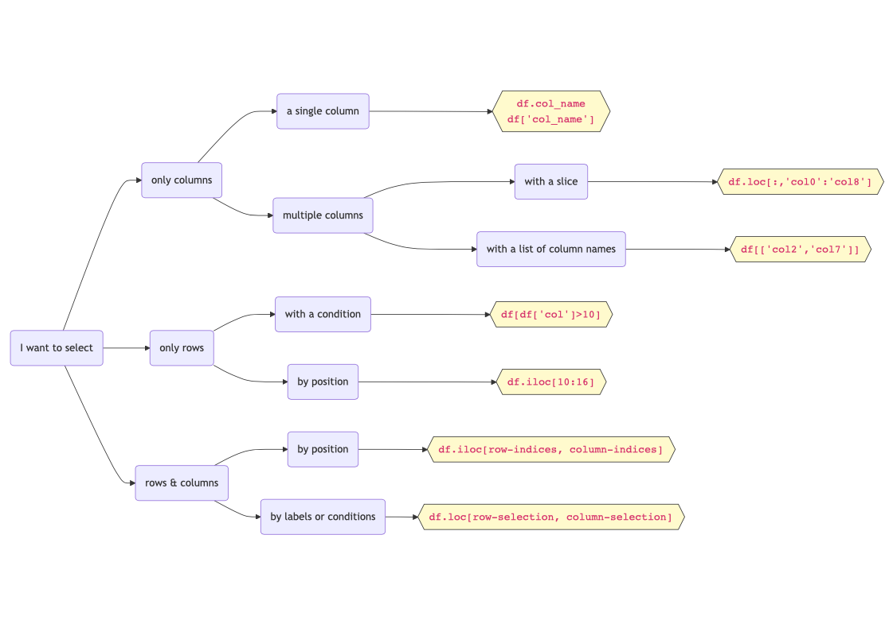

| year | CSM_winter | CSM_spring | CSM_fall | MUL_winter | MUL_spring | MUL_fall | SDW_winter | SDW_spring | SDW_fall | TJE_winter | TJE_spring | TJE_fall | |
|---|---|---|---|---|---|---|---|---|---|---|---|---|---|
| 0 | 2010 | 39.0 | 40.0 | 50.0 | 45.0 | NaN | 61.0 | NaN | 75.0 | 85.0 | NaN | NaN | 81.0 |
| 1 | 2011 | 48.0 | 44.0 | NaN | 58.0 | 52.0 | NaN | 78.0 | 74.0 | NaN | 67.0 | 70.0 | NaN |
| 2 | 2012 | 51.0 | 43.0 | 49.0 | 57.0 | 58.0 | 53.0 | 71.0 | 72.0 | 73.0 | 70.0 | 63.0 | 69.0 |
2 Subsetting
In this lesson we will learn different methods to select data from a pandas.DataFrame. Like it’s often the case when working with the pandas package, there are many ways in which we can subset a data frame. Here we will review the core methods to do this.
A summary of the methods covered in this lesson can be found in Figure 1.
Learning objectives
By the end of this lesson, students will be able to:
- Choose appropriate methods for selecting rows and columns from a
pandas.DataFrame - Construct conditions to subset rows
- Describe the difference between label-based subsetting and position-based subsetting
- Apply best practies when using
ilocandlocselection
About the data
In this lesson we will use annual estimates of bird species abundance in four coastal wetlands along the California coast. This dataset was derived for education purposes for this course from the UCSB SONGS Mitigation Monitoring: Wetland Performance Standard - Bird Abundance and Species Richness dataset [1]. The SONGS dataset was collected as part of the San Onofre Nuclear Generating Station (SONGS) San Dieguito Wetland Restoration monitoring program.

The annual bird species abundance estimates is a CSV file with 13 columns and 14 rows. You can see the first three rows below.
The four wetlands where the bird surveys occured are Carpinteria Salt Marsh (CSM), Mugu Lagoon (MUL), the San Dieguito Wetland (SDW), and the Tijuana Estuary (TJE). The values from the second column to the last column correspond to the number of different bird species recorded across the survey sites in each wetland during winter, spring, and fall of a given year. For example, the CSM_fall column has the number of species recorded in fall at Carpinteria Salt Marsh across years. The year column corresponds to the calendar year on which the data was collected. Surveys have happened yearly from 2010 to 2023.

CSV files
A CSV (Comma-Separated Values) file is an open, simple text format for storing tabular data, with rows separated by line breaks and columns by commas. It’s widely used in environmental science for sharing datasets like species counts and environmental monitoring data because it’s easy to create, read, and process in different platforms, without the need of proprietary software.
To read in a CSV file into our Python workspace as pandas.DataFrame we use the pandas.read_csv function:
import pandas as pd
# Read in file, argument is the file path
df = pd.read_csv('data/wetlands_seasonal_bird_diversity.csv')Next, we obtain some high-level information about this data frame:
# Print data frame's first five rows
df.head()| year | CSM_winter | CSM_spring | CSM_fall | MUL_winter | MUL_spring | MUL_fall | SDW_winter | SDW_spring | SDW_fall | TJE_winter | TJE_spring | TJE_fall | |
|---|---|---|---|---|---|---|---|---|---|---|---|---|---|
| 0 | 2010 | 39.0 | 40.0 | 50.0 | 45.0 | NaN | 61.0 | NaN | 75.0 | 85.0 | NaN | NaN | 81.0 |
| 1 | 2011 | 48.0 | 44.0 | NaN | 58.0 | 52.0 | NaN | 78.0 | 74.0 | NaN | 67.0 | 70.0 | NaN |
| 2 | 2012 | 51.0 | 43.0 | 49.0 | 57.0 | 58.0 | 53.0 | 71.0 | 72.0 | 73.0 | 70.0 | 63.0 | 69.0 |
| 3 | 2013 | 42.0 | 46.0 | 38.0 | 60.0 | 58.0 | 62.0 | 69.0 | 70.0 | 70.0 | 69.0 | 74.0 | 64.0 |
| 4 | 2014 | 38.0 | 43.0 | 45.0 | 49.0 | 52.0 | 57.0 | 61.0 | 78.0 | 71.0 | 60.0 | 81.0 | 62.0 |
# Print data frame's last five rows
df.tail()| year | CSM_winter | CSM_spring | CSM_fall | MUL_winter | MUL_spring | MUL_fall | SDW_winter | SDW_spring | SDW_fall | TJE_winter | TJE_spring | TJE_fall | |
|---|---|---|---|---|---|---|---|---|---|---|---|---|---|
| 9 | 2019 | 39.0 | 39.0 | 40.0 | 57.0 | 52.0 | 53.0 | 54.0 | 55.0 | 53.0 | 63.0 | 54.0 | 50.0 |
| 10 | 2020 | 46.0 | NaN | 47.0 | 56.0 | NaN | 66.0 | 57.0 | NaN | 58.0 | 54.0 | 40.0 | 54.0 |
| 11 | 2021 | 47.0 | 44.0 | 53.0 | 54.0 | 55.0 | 60.0 | 57.0 | 58.0 | 57.0 | 53.0 | 68.0 | 51.0 |
| 12 | 2022 | 40.0 | 46.0 | 49.0 | 60.0 | 55.0 | 65.0 | 57.0 | 60.0 | 57.0 | 60.0 | 61.0 | 60.0 |
| 13 | 2023 | 56.0 | 43.0 | 36.0 | 72.0 | 59.0 | 53.0 | 64.0 | 63.0 | 33.0 | 60.0 | 56.0 | 38.0 |
# Print data frame's column names
df.columnsIndex(['year', 'CSM_winter', 'CSM_spring', 'CSM_fall', 'MUL_winter',
'MUL_spring', 'MUL_fall', 'SDW_winter', 'SDW_spring', 'SDW_fall',
'TJE_winter', 'TJE_spring', 'TJE_fall'],
dtype='object')# List the data types of each column
df.dtypesyear int64
CSM_winter float64
CSM_spring float64
CSM_fall float64
MUL_winter float64
MUL_spring float64
MUL_fall float64
SDW_winter float64
SDW_spring float64
SDW_fall float64
TJE_winter float64
TJE_spring float64
TJE_fall float64
dtype: object# Print data frame's shape: output is a tuple (# rows, # columns)
df.shape(14, 13)Selecting a single column
Selecting a single column by column name is the simplest case for selecting data in a data frame. The genereal syntax to do this is:
df['column_name']Notice the column name is given as string inside the square brackets. This is an example of label-based subsetting, which means we want to select data from our data frame using the names of the columns, not their position. When we select rows or column using their position, we are doing position-based subsetting. We’ll see some methods to do this when we move into selecting rows.
Example
Suppose we are interested in the number of bird species observed at the Mugu Lagoon in spring. We can access that single column in this way:
# Select a single column by using square brackets []
mul_spring = df['MUL_spring']
# Print first five elements in this column
mul_spring.head()0 NaN
1 52.0
2 58.0
3 58.0
4 52.0
Name: MUL_spring, dtype: float64Since we only selected a single column, mul_spring is a pandas.Series:
# Check the type of the ouput
print(type(mul_spring))<class 'pandas.core.series.Series'>pd.DataFrame = dictionary of columns
Remember we can think of a pandas.DataFrame as a dictionary of its columns? Then we can access a single column using the column name as the key, just like we would do in a dictionary. That is the we just used: df['column_name'].
We can also do label-based subsetting of a single column using attribute syntax:
df.column_nameFor example, to see the head of the MUL_spring column we would do:
df.MUL_spring.head()0 NaN
1 52.0
2 58.0
3 58.0
4 52.0
Name: MUL_spring, dtype: float64
Favor
df['column_name'] instead of df.column_name
In general, it is better to use the df['column_name'] syntax. A couple reasons why are:
df['column_name']can take in any column name, whiledf.column_nameonly works if the column name has no spaces or special charactersdf['column_name']avoids conflicts withpd.DataFramemethods and attributes. For example, ifdfhas a column namedcount, it’s ambiguous whetherpd.countis referring to thecount()method or thecountcolumn.
Selecting multiple columns…
… using a list of column names
We can select multiple columns in a single call by passing a list with the column names to the square brackets []:
df[['column_1', 'column_10', 'column_245']]Notice there are double square brackets. This is because we are passing the list of names ['column_1', 'column_10', 'column_245'] to the selection brackets [].
Check-in
Is this an example of label-based selection or location-based selection?
Example
If we want to look at the species in the Tijuana Estuary during winter and fall, then we can select these columns like this:
# Select columns with names "TJE_winter" and "TJE_fall"
tje_wf = df[['TJE_winter','TJE_fall']]Notice there are double square brackets. This is because we are passing the list of names ['TJE_winter','TJE_fall'] to the selection brakcets [].
Check-in
What is the type and shape of the tje_wf output? Verify your answer.
… using a slice
To select a slice of the columns we will use a special case of loc selection (we’ll cover the general one by the end of the lesson). The syntax will be
df.loc[ : , 'column_start':'column_end']where column_start and column_end are, respectively, the starting point and endpoint of the column slice we want to subset from the data frame.
Notice two things:
- the first value passed to
locis used for selecting rows, using a colon:as the row-selection parameter means “select all the rows” - the slice of the data frame we’ll obtain includes both endpoints of the slice
'column_start':'column_end'. In other words, we’ll get thecolumn_startcolumn and thecolumn_endcolumn. This is different from how slicing works in base Python and NumPy, where the endpoint is not included.
Example
Let’s select the slice of columns that covers all data from Carpinteria Salt Marsh and Mugu Lagoon. This corresponds to all columns between CSM_winter and MUL_fall.
# Select columns between 'CSM_winter' and 'MUL_fall'
csm_mul = df.loc[:,'CSM_winter':'MUL_fall']
csm_mul.head()| CSM_winter | CSM_spring | CSM_fall | MUL_winter | MUL_spring | MUL_fall | |
|---|---|---|---|---|---|---|
| 0 | 39.0 | 40.0 | 50.0 | 45.0 | NaN | 61.0 |
| 1 | 48.0 | 44.0 | NaN | 58.0 | 52.0 | NaN |
| 2 | 51.0 | 43.0 | 49.0 | 57.0 | 58.0 | 53.0 |
| 3 | 42.0 | 46.0 | 38.0 | 60.0 | 58.0 | 62.0 |
| 4 | 38.0 | 43.0 | 45.0 | 49.0 | 52.0 | 57.0 |
Selecting rows…
Now that we are familiar with some methods for selecting columns, let’s move on to selecting rows.
… using a condition
Selecting rows that satisfy a particular condition is one of the most usual kinds of row subsetting. The general syntax for this type of selection is
df[condition_on_rows]That condition_of_rows can be a myriad things, let’s see some usual scenarios.
Example
Suppose we are intersted in all data after 2020. We can select these rows in this way:
# Select all rows with year > 2020
post_2020 = df[df['year']>2020]
post_2020| year | CSM_winter | CSM_spring | CSM_fall | MUL_winter | MUL_spring | MUL_fall | SDW_winter | SDW_spring | SDW_fall | TJE_winter | TJE_spring | TJE_fall | |
|---|---|---|---|---|---|---|---|---|---|---|---|---|---|
| 11 | 2021 | 47.0 | 44.0 | 53.0 | 54.0 | 55.0 | 60.0 | 57.0 | 58.0 | 57.0 | 53.0 | 68.0 | 51.0 |
| 12 | 2022 | 40.0 | 46.0 | 49.0 | 60.0 | 55.0 | 65.0 | 57.0 | 60.0 | 57.0 | 60.0 | 61.0 | 60.0 |
| 13 | 2023 | 56.0 | 43.0 | 36.0 | 72.0 | 59.0 | 53.0 | 64.0 | 63.0 | 33.0 | 60.0 | 56.0 | 38.0 |
Let’s break down what is happening here. The condition for our rows is df['year']>2020, this is a pandas.Series with boolean values (True or False) indicating which rows satisfy the condition year>2020:
# Check the type of df['year']>1996
print(type(df['year']>2020))
# Print the boolean series
df['year']>2020<class 'pandas.core.series.Series'>0 False
1 False
2 False
3 False
4 False
5 False
6 False
7 False
8 False
9 False
10 False
11 True
12 True
13 True
Name: year, dtype: boolWhen we pass such a series of boolean values to the selection brackets [] we keep only the rows that correspond to a True value.
Check-in
Get the subset of the data frame on which the San Dieguito Wetland has at least 75 species recorded during spring.
Example
Suppose we want to look at data from years 2012 to 2015 (including both years). One way of doing this is to use the between operator in our condition:
subset = df[df['year'].between(2012, 2015)]
subset| year | CSM_winter | CSM_spring | CSM_fall | MUL_winter | MUL_spring | MUL_fall | SDW_winter | SDW_spring | SDW_fall | TJE_winter | TJE_spring | TJE_fall | |
|---|---|---|---|---|---|---|---|---|---|---|---|---|---|
| 2 | 2012 | 51.0 | 43.0 | 49.0 | 57.0 | 58.0 | 53.0 | 71.0 | 72.0 | 73.0 | 70.0 | 63.0 | 69.0 |
| 3 | 2013 | 42.0 | 46.0 | 38.0 | 60.0 | 58.0 | 62.0 | 69.0 | 70.0 | 70.0 | 69.0 | 74.0 | 64.0 |
| 4 | 2014 | 38.0 | 43.0 | 45.0 | 49.0 | 52.0 | 57.0 | 61.0 | 78.0 | 71.0 | 60.0 | 81.0 | 62.0 |
| 5 | 2015 | 44.0 | 42.0 | 45.0 | 58.0 | 50.0 | 51.0 | 71.0 | 61.0 | 65.0 | 73.0 | 76.0 | 64.0 |
Let’s break down this code:
df['year']is the column with the year values, apandas.Seriesin
df['year'].between(), we have thatbetweenis a method for thepandas.Seriesand we are calling it using the dot.(2012, 2015)are the parameters for thebetween()method, from thepandasdocumentation we can see this method will subset including both endpointsdf['year'].between(2012, 2015)is then apandas.Seriesof boolean values indicating which rows have year equal to 2012, 2013, 2014, or 2015.when we put
df['year'].between(2012, 2015)inside the selection brackets[]we obtain the rows of the data frame with year equal to 2012, …, 2015.
… using multiple conditions
We can combine multipe conditions to select rows by surrounding each one in parenthesis () and using the or operator | and the and operator &.
Example: or
Let’s select rows in which the Carpinteria Salt Marsh has more than 50 species registered in winter or fall:
df[ (df['CSM_winter']>50) | (df['CSM_fall']>50)]| year | CSM_winter | CSM_spring | CSM_fall | MUL_winter | MUL_spring | MUL_fall | SDW_winter | SDW_spring | SDW_fall | TJE_winter | TJE_spring | TJE_fall | |
|---|---|---|---|---|---|---|---|---|---|---|---|---|---|
| 2 | 2012 | 51.0 | 43.0 | 49.0 | 57.0 | 58.0 | 53.0 | 71.0 | 72.0 | 73.0 | 70.0 | 63.0 | 69.0 |
| 11 | 2021 | 47.0 | 44.0 | 53.0 | 54.0 | 55.0 | 60.0 | 57.0 | 58.0 | 57.0 | 53.0 | 68.0 | 51.0 |
| 13 | 2023 | 56.0 | 43.0 | 36.0 | 72.0 | 59.0 | 53.0 | 64.0 | 63.0 | 33.0 | 60.0 | 56.0 | 38.0 |
Example: and
Let’s select rows in which both the Carpinteria Salt Marsh and the San Dieguito Wetland have more than 60 reported bird species during spring:
df[ (df['CSM_spring']>60) & (df['SDW_spring']>60)]| year | CSM_winter | CSM_spring | CSM_fall | MUL_winter | MUL_spring | MUL_fall | SDW_winter | SDW_spring | SDW_fall | TJE_winter | TJE_spring | TJE_fall |
|---|
An empty data frame! That’s ok, it just means there are no rows that satisfy the given condition.
… by position
All the selections we have done so far have been using labels. Sometimes we may want to select certain rows depending on their actual position in the data frame. In other words, using position-based subsetting. To do this, we use iloc selection with the syntax
df.iloc[row-indices]iloc stands for integer-location based indexing.
Example
# Select the fifth row (index=4)
df.iloc[4]year 2014.0
CSM_winter 38.0
CSM_spring 43.0
CSM_fall 45.0
MUL_winter 49.0
MUL_spring 52.0
MUL_fall 57.0
SDW_winter 61.0
SDW_spring 78.0
SDW_fall 71.0
TJE_winter 60.0
TJE_spring 81.0
TJE_fall 62.0
Name: 4, dtype: float64# Select rows 9 through 13, inclduing 13
df.iloc[9:14]| year | CSM_winter | CSM_spring | CSM_fall | MUL_winter | MUL_spring | MUL_fall | SDW_winter | SDW_spring | SDW_fall | TJE_winter | TJE_spring | TJE_fall | |
|---|---|---|---|---|---|---|---|---|---|---|---|---|---|
| 9 | 2019 | 39.0 | 39.0 | 40.0 | 57.0 | 52.0 | 53.0 | 54.0 | 55.0 | 53.0 | 63.0 | 54.0 | 50.0 |
| 10 | 2020 | 46.0 | NaN | 47.0 | 56.0 | NaN | 66.0 | 57.0 | NaN | 58.0 | 54.0 | 40.0 | 54.0 |
| 11 | 2021 | 47.0 | 44.0 | 53.0 | 54.0 | 55.0 | 60.0 | 57.0 | 58.0 | 57.0 | 53.0 | 68.0 | 51.0 |
| 12 | 2022 | 40.0 | 46.0 | 49.0 | 60.0 | 55.0 | 65.0 | 57.0 | 60.0 | 57.0 | 60.0 | 61.0 | 60.0 |
| 13 | 2023 | 56.0 | 43.0 | 36.0 | 72.0 | 59.0 | 53.0 | 64.0 | 63.0 | 33.0 | 60.0 | 56.0 | 38.0 |
Notice that, since we are back to indexing by position, the right endpoint of the slice is not included in the ouput.
Selecting rows and columns simultaneously…
Selecting rows and columns simultaneously can be done using loc (labels) or iloc (positions).
…by labels or conditions
When we want to select rows and columns simultaneously by labels (including using conditions) we can use loc selection with the syntax
df.loc[ row-selection , column-selection]specifying both parameters: row-selection and column-selection. These parameters can be a condition or a subset of labels from the index or the column names.
Example
Let’s select the winter surveys for Mugu Lagoon and the Tijuana Estuary after 2020:
df.loc[df['year']>2020, ['MUL_winter','TJE_winter']]| MUL_winter | TJE_winter | |
|---|---|---|
| 11 | 54.0 | 53.0 |
| 12 | 60.0 | 60.0 |
| 13 | 72.0 | 60.0 |
Let’s break down this code:
we are using the
df.loc[ row-selection , column-selection]syntaxthe
row-selectionparameter is the conditiondf['year']>2020, which is a boolean array saying which years are greater than 2020the
column-selectionparameter is['MUL_winter','TJE_winter'], which is a list with the names of the two columns we are interested in.
… by position
When we want to select rows and columns simultaneously by position we use iloc selection with the syntax:
df.iloc[ row-indices , column-indices]Example
Suppose we want to select rows 3-7 (including 7) and columns 3 and 4:
df.iloc[3:8, [3,4]]| CSM_fall | MUL_winter | |
|---|---|---|
| 3 | 38.0 | 60.0 |
| 4 | 45.0 | 49.0 |
| 5 | 45.0 | 58.0 |
| 6 | 47.0 | 63.0 |
| 7 | 43.0 | 57.0 |
Let’s break it down:
we are using the
df.iloc[ row-indices , column-indices]syntax to select by positionthe
row-indicesparameter is the slice of integer indices 3:8. Remember the right endpoint (8) won’t be included.the
column-indicesparameter is the list of integer indices 3 and 4. This means we are selecting the fourth and fifth column.
Notes about loc and iloc
iloc vs. loc: which one does what?
At the beginning, the difference between iloc and loc can be confusing. Remember the i in iloc stands for integer location, this reminds us iloc only uses integer indexing to retrieve information from the data frames in the same way as indexing for Python lists.
If you want to dive deeper, this is a great discussion about the difference between iloc and loc: Stackoverflow - How are iloc and loc different?
And, as always, the documentation will provide you with more information: pandas.DataFrame.loc and pandas.DataFrame.iloc.
iloc for column selection? Think about it.
We can also access columns by position using iloc - but consider carefully if this is the best approach.
Suppose we want to access the 9th column in the data frame - then we want to select a column by position. In this case, the 9th column is the data at San Dieguito Wetland during spring and the 9th position corresponds to the index 8. We can select this column by position using the iloc selection:
# Select column by position using iloc
# The syntax is iloc[row-indices, column-indices]
# [:,8] means "select all rows from the 8th column"
sdw_spring = df.iloc[:,8]
sdw_spring.head()0 75.0
1 74.0
2 72.0
3 70.0
4 78.0
Name: SDW_spring, dtype: float64Unless you are really looking for information about the 9th column, consider whether it is the best approach to access a column by position. This can break in several ways:
it relies on a person correctly counting the position of a column. Even with a small dataset this can be prone to error.
it is not explicit: if we want information about San Dieguito Wetland during spring,
df.SDW_springordf['SDW_spring']are explicitely telling us we are accessing that information.df.iloc[:,8]is obscure and uninformative.datastets can get updated. Maybe a new column was added before
SDW_spring, this would change the position of the column, which would make any code depending ondf.iloc[:,8]invalid.
Using iloc for accessing can still be the best option when working with very large, static datasets. As always, consider what will make your code both understandable and efficient.
Generally. accessing columns by labels can help reproducibility!
Summary

pandas.DataFrame.
Resources
What is presented in this section is not an exhaustive list of methods to select data in pandas.DataFrames. There are so many ways to subset data to get the same result. Some of the content from this lesson is adapted from the following resources and I encourage you to read them to learn more!
📖 Pandas getting started tutorials - How to I select a subset of a DataFrame
📖 Pandas documentation - User Guide - Indexing and Selecting Data
📖 Python for Data Analysis, 3E - Getting started with pandas
References
[1]
S. C. Schroeter et al., “UCSB SONGS Mitigation Monitoring: Wetland Survey - Bird Abundance.” Environmental Data Initiative, 2024. doi: 10.6073/PASTA/5E5E4D0C6BBF455B9F2474ED05C31072. Available: https://portal.edirepository.org/nis/mapbrowse?packageid=edi.649.6. [Accessed: Sep. 13, 2024]